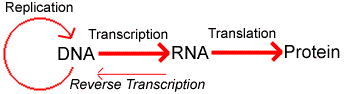
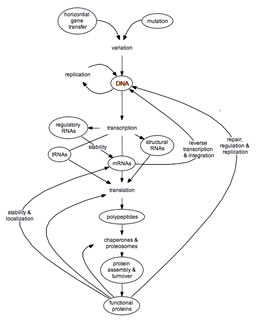

Basics of Gene expression |
| |
|  | A basic unit (in one sense) of genetic information is a gene. Each gene consists of a regulatory region, which controls its transcription, and the region that is transcribed into RNA. The total set of genes an organism contains is know as its genome. |
Yet the reality is rather more complex. The information in DNA is meaningless unless it can be expressed. Gene expression depends upon both RNAs and proteins; without a preexisting cell, there is no gene expression. |
To analyze gene expression we are need to consider the steps in the life and activity of the various gene products. We will begin and restrict our analysis of bacteria, since their regulatory processes, while complex, are simpler than those in eukaryotes. The first step is the rate at which a specific gene is transcribed into RNA. This rate is determined by a number of factors, most directly by the set of transcription factors - proteins that regulate transcription, present in the cell. The transcription rate of a gene n is the number of transcripts synthesized per unit time (t) TsS sub n = dRn/dt. |
 |
If the only factor effecting gene expression where the transcription rate, then for any finite transcription rate, the number of transcripts made will increase as a linear function of time. But transcripts are not immortal, they can be destroyed by various processes involve nucleases, generally protein catalysts that degrade RNAs. The rate of transcript degradation will be a function of transcript concentration and nuclease activity. Nuclease activity is itself a function of nuclease concentration, catalytic activity and affinity for the specific transcript. Most cells contain a number of nucleases that can act on transcripts. We will, for now, consider their combined effects. We can write that equation as... TsD sub n = [Ts sub n]nuclease activity |